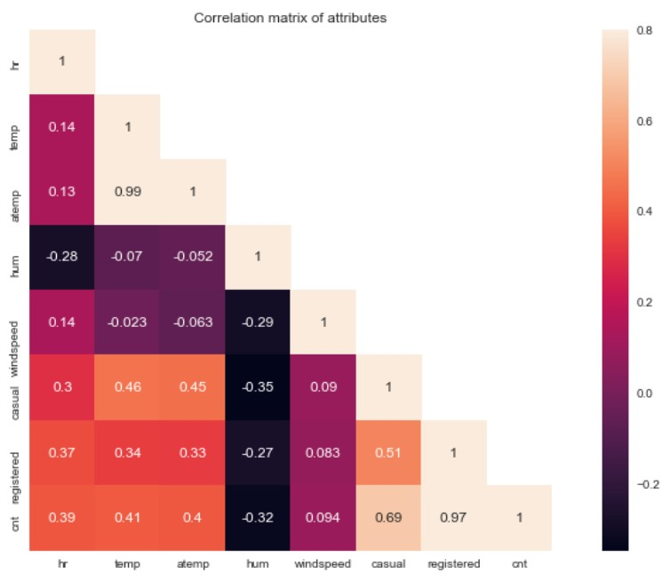
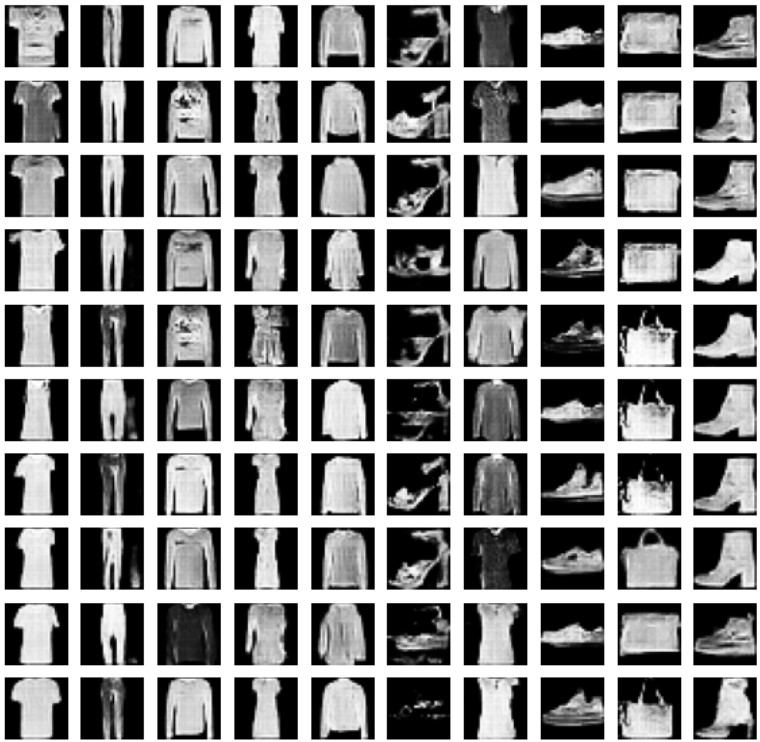
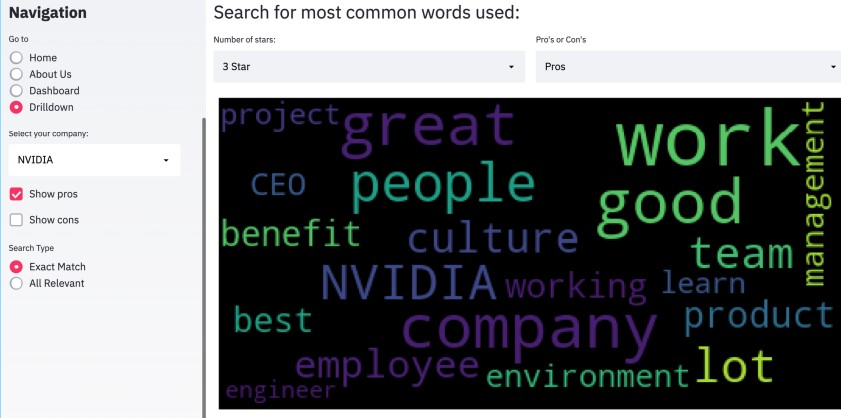
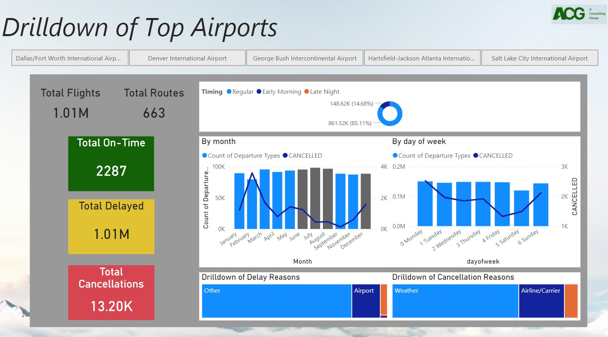
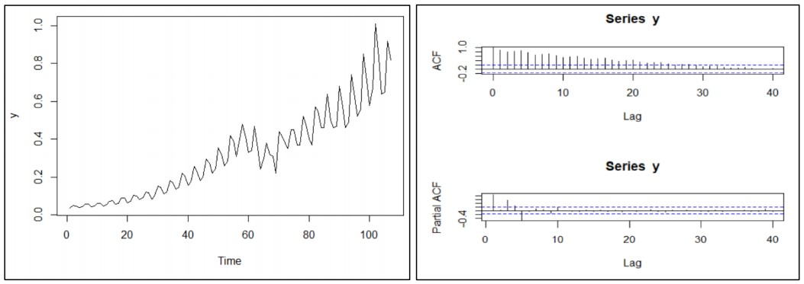
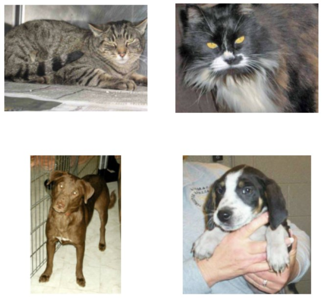
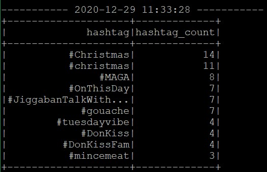

Ashley Qing Loh
LinkedIn
Email

PREDICTIVE ANALYTICS:
Predicting number of bike users given weather conditions

GENERATIVE ADVERSERIAL NETWORK:
Generating images of items of clothing from a random seed

NATURAL LANGUAGE PROCESSING:
Using Sentiment Analysis and Information Retrieval to analyze Glassdoor reviews

POWERBI DASHBOARD:
Visualization of a hypothetical company expansion into North America

FORECASTING TIME SERIES:
Analysis of Coca Cola's Quarterly Earnings per Share

CONVOLUTIONAL NEURAL NETWORK:
Classifying cat and dog images

STREAM PROCESSING:
Using Kafka and Spark to stream tweets from Twitter and SQL to extract top 10 most frequent hashtags